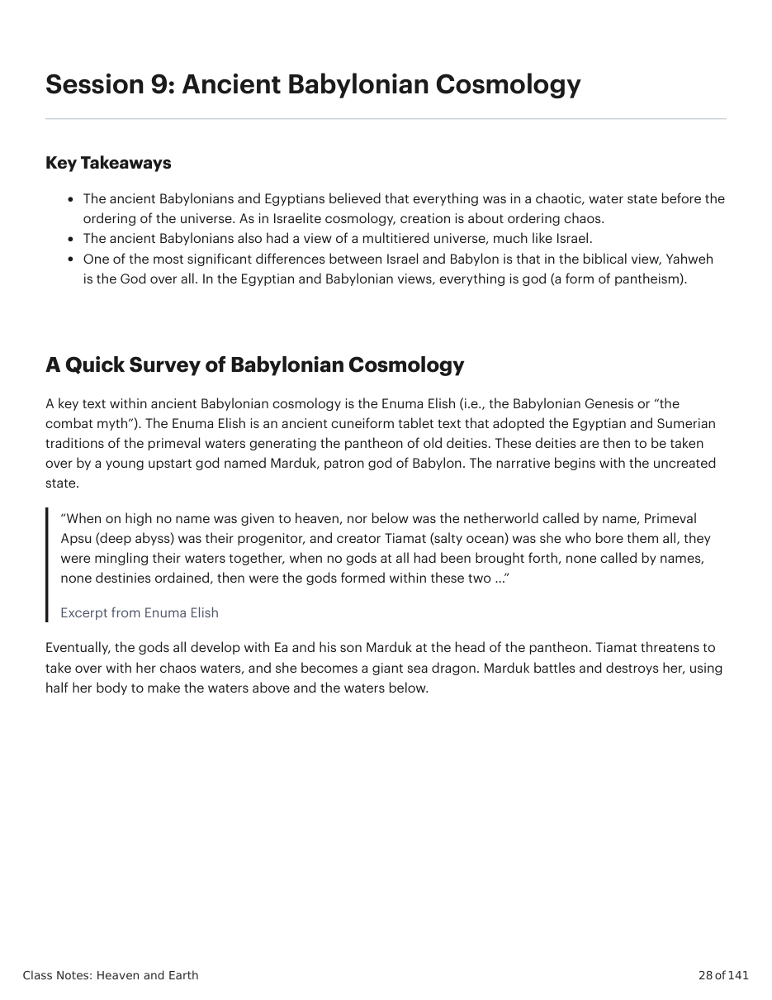
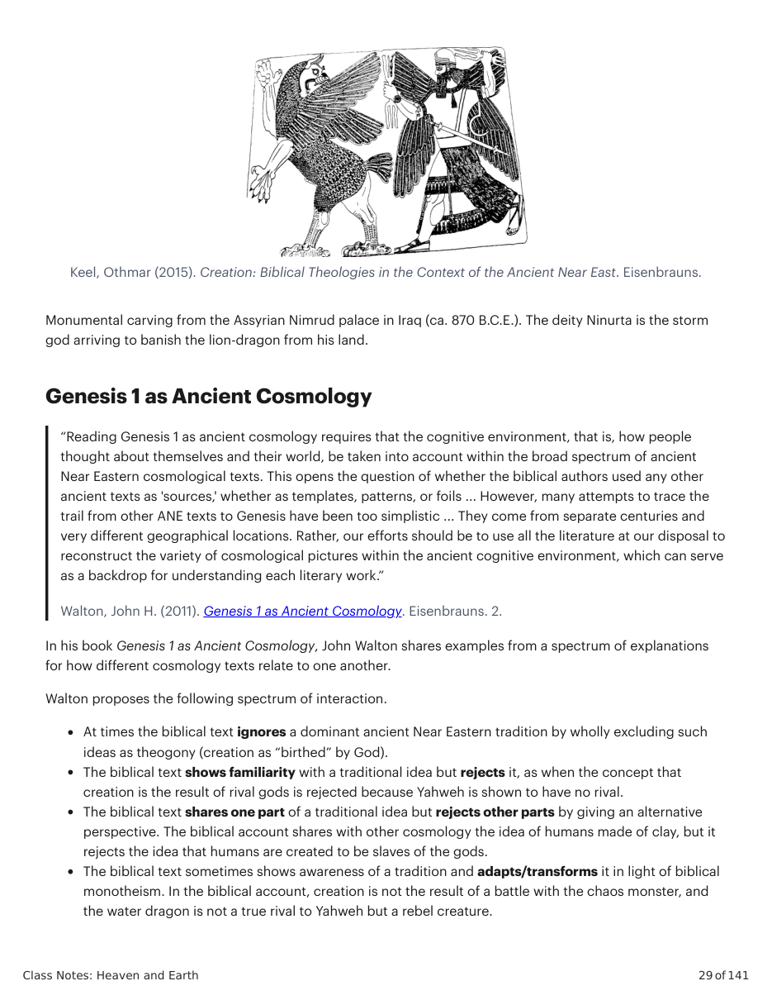
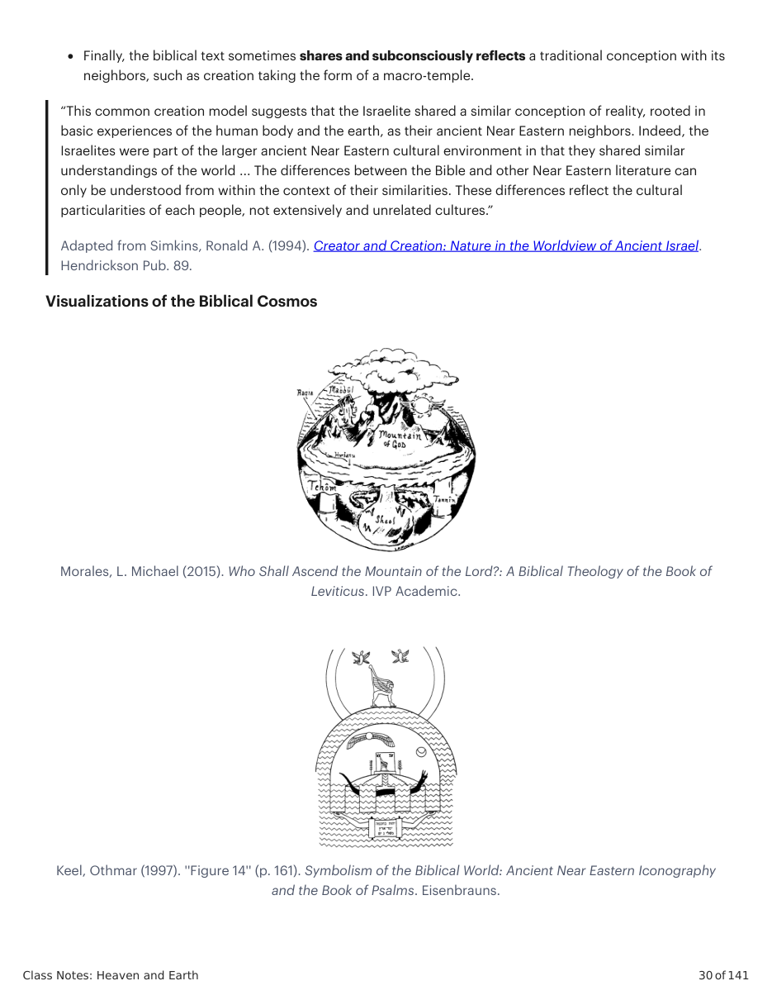
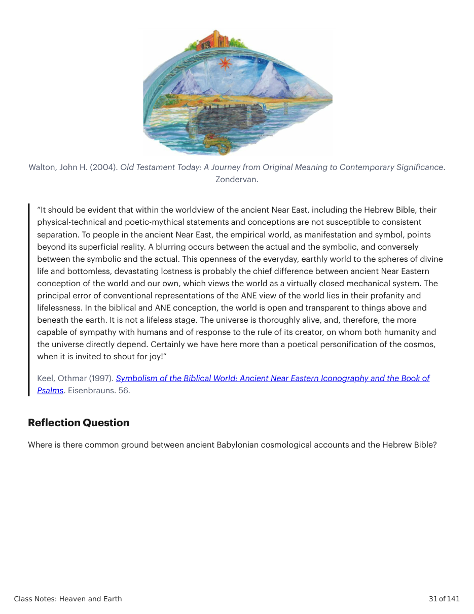

Keel, Othmar (2015). Creation: Biblical Theologies in the Context of the Ancient Near East. Eisenbrauns.
Monumental carving from the Assyrian Nimrud palace in Iraq (ca. 870 B.C.E.). The deity Ninurta is the storm god arriving to banish the lion-dragon from his land. Genesis 1 as Ancient Cosmology “Reading Genesis 1 as ancient cosmology requires that the cognitive environment, that is, how people thought about themselves and their world, be taken into account within the broad spectrum of ancient Near Eastern cosmological texts. This opens the question of whether the biblical authors used any other ancient texts as 'sources,' whether as templates, patterns, or foils ... However, many attempts to trace the trail from other ANE texts to Genesis have been too simplistic ... They come from separate centuries and very different geographical locations. Rather, our efforts should be to use all the literature at our disposal to reconstruct the variety of cosmological pictures within the ancient cognitive environment, which can serve as a backdrop for understanding each literary work.”
Walton, John H. (2011). Genesis 1 as Ancient Cosmology. Eisenbrauns. 2.
In his book Genesis 1 as Ancient Cosmology, John Walton shares examples from a spectrum of explanations for how different cosmology texts relate to one another. Walton proposes the following spectrum of interaction. At times the biblical text ignores a dominant ancient Near Eastern tradition by wholly excluding such ideas as theogony (creation as “birthed” by God). The biblical text shows familiarity with a traditional idea but rejects it, as when the concept that creation is the result of rival gods is rejected because Yahweh is shown to have no rival. The biblical text shares one part of a traditional idea but rejects other parts by giving an alternative perspective. The biblical account shares with other cosmology the idea of humans made of clay, but it rejects the idea that humans are created to be slaves of the gods. The biblical text sometimes shows awareness of a tradition and adapts/transforms it in light of biblical monotheism. In the biblical account, creation is not the result of a battle with the chaos monster, and the water dragon is not a true rival to Yahweh but a rebel creature. Finally, the biblical text sometimes shares and subconsciously reflects a traditional conception with its neighbors, such as creation taking the form of a macro-temple. “This common creation model suggests that the Israelite shared a similar conception of reality, rooted in basic experiences of the human body and the earth, as their ancient Near Eastern neighbors. Indeed, the Israelites were part of the larger ancient Near Eastern cultural environment in that they shared similar understandings of the world ... The differences between the Bible and other Near Eastern literature can only be understood from within the context of their similarities. These differences reflect the cultural particularities of each people, not extensively and unrelated cultures.”
Adapted from Simkins, Ronald A. (1994). Creator and Creation: Nature in the Worldview of Ancient Israel.
Hendrickson Pub. 89. Visualizations of the Biblical Cosmos
Morales, L. Michael (2015). Who Shall Ascend the Mountain of the Lord?: A Biblical Theology of the Book of
Leviticus. IVP Academic.
Keel, Othmar (1997). ''Figure 14'' (p. 161). Symbolism of the Biblical World: Ancient Near Eastern Iconography
and the Book of Psalms. Eisenbrauns.
Walton, John H. (2004). Old Testament Today: A Journey from Original Meaning to Contemporary Significance.
Zondervan. “It should be evident that within the worldview of the ancient Near East, including the Hebrew Bible, their physical-technical and poetic-mythical statements and conceptions are not susceptible to consistent separation. To people in the ancient Near East, the empirical world, as manifestation and symbol, points beyond its superficial reality. A blurring occurs between the actual and the symbolic, and conversely between the symbolic and the actual. This openness of the everyday, earthly world to the spheres of divine life and bottomless, devastating lostness is probably the chief difference between ancient Near Eastern conception of the world and our own, which views the world as a virtually closed mechanical system. The principal error of conventional representations of the ANE view of the world lies in their profanity and lifelessness. In the biblical and ANE conception, the world is open and transparent to things above and beneath the earth. It is not a lifeless stage. The universe is thoroughly alive, and, therefore, the more capable of sympathy with humans and of response to the rule of its creator, on whom both humanity and the universe directly depend. Certainly we have here more than a poetical personification of the cosmos, when it is invited to shout for joy!”
Keel, Othmar (1997). Symbolism of the Biblical World: Ancient Near Eastern Iconography and the Book of
Psalms. Eisenbrauns. 56.
Where is there common ground between ancient Babylonian cosmological accounts and the Hebrew Bible?
Como a história de Gênesis 1 "corrige" ou subverte as cosmologias babilônica e egípcia?



